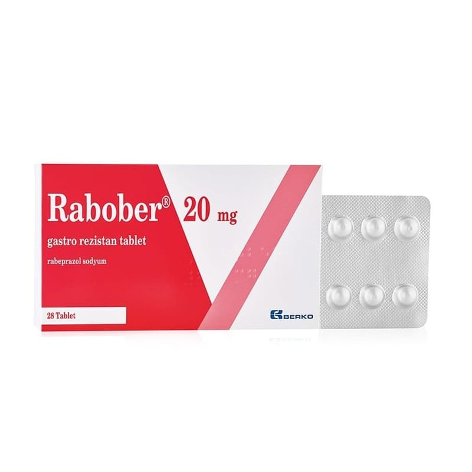

Rabober 20 mg Gastro Rezistan Tablet, 28 Adet

Ne için kullanılır
KT · Bölüm 1• RABOBER, özel geciktirilmiş salımlı enterik formülasyonu sayesinde, midede parçalanmaksızın bağırsaklara geçen ve burada emilen, beyaz renkli, yuvarlak, düzgün yüzeyli, gastro rezistan (mide asidine dayanıklı) tablettir. Her bir gastro rezistan tablet, 18.85 miligram rabeprazole eşdeğer 20 miligram rabeprazol sodyum içerir.
• RABOBER, 14 ve 28 gastro rezistan tablet içeren kutularda alüminyum/alüminyum blister ambalajda piyasaya sunulmaktadır.
• RABOBER’in etkin maddesi olan rabeprazol sodyum, Proton Pompası İnhibitörleri adı verilen bir ilaç sınıfında yer almaktadır. Bu sınıftaki ilaçlar, mide asidi salgılanmasında önemli bir yeri olan ve midedeki bazı özel hücrelerde bulunan proton pompası denilen sistemin çalışmasını engelleyerek, mide asidinin azalmasını sağlarlar. Mide asidinin azalması, mide, bağırsak ve yemek borusunda bulunan ülserlerin (peptik ülser) iyileşmesini ve ağrının giderilmesini sağlar.
Bu ilacı kullanmaya başlamadan önce bu KULLANMA TALİMATINI dikkatlice okuyunuz, çünkü sizin için önemli bilgiler içermektedir. • Bu kullanma talimatını saklayınız. Daha sonra tekrar okumaya ihtiyaç duyabilirsiniz. • Eğer ilave sorularınız olursa, lütfen doktorunuza veya eczacınıza danışınız. • Bu ilaç kişisel olarak sizin için reçete edilmiştir, başkalarına vermeyiniz. • Bu ilacın kullanımı sırasında, doktora veya hastaneye gittiğinizde doktorunuza bu ilacı kullandığınızı söyleyiniz. • Bu talimatta yazılanlara aynen uyunuz. İlaç hakkında size önerilen dozun dışında yüksek veya düşük doz kullanmayınız.
• RABOBER, aktif duodenum (on iki parmak bağırsağı) ülseri, aktif selim mide ülseri, semptomatik erozif ya da ülseratif gastro-özofajiyal reflü hastalığı (GÖRH) tanısı konulmuş hastaların tedavisinde kullanılmaktadır. GÖRH, mide sıvısının anormal bir şekilde üstteki yemek borusuna geçmesi ve burayı aşındırması veya ülserlere yol açması ile ortaya çıkan bir hastalıktır. RABOBER aynı zamanda, gastro-özofajiyal reflü hastalığının uzun dönemli tedavisi için (GÖRH idame), orta derecede ile çok şiddetli gastro-özofajiyal reflü hastalığının belirtilerinin giderilmesi için ve mide asidinin sürekli olarak çok miktarlarda bulunduğu bir hastalık tablosu olan Zollinger-Ellison Sendromu’nda da kullanılır.
RABOBER ayrıca, uygun antibiyotik ilaçlar ile kombinasyon şeklinde, mide ülseri oluşumunda rol oynayan bir bakteri olan Helicobacter pylori’nin eradikasyonu (ortadan kaldırılması) için de kullanılmaktadır.